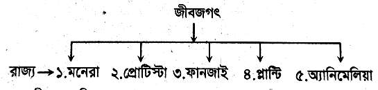
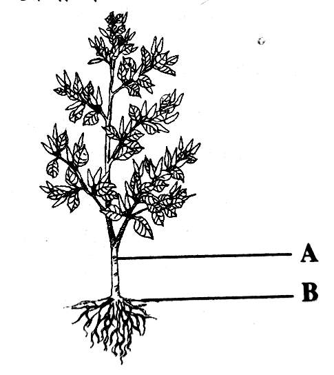
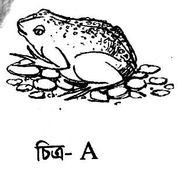
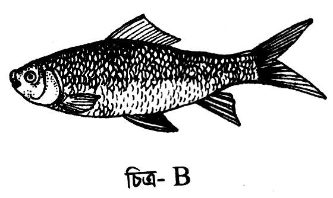
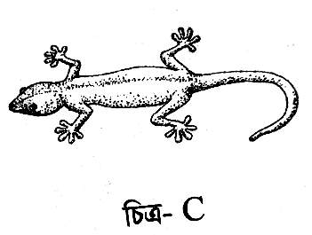

বহুনির্বাচনি প্রশ্ন - ১০
১. ভরের একক কোনটি?
ক. কিলোমিটার খ. কিলোগ্রাম গ. ক্যালভিন ঘ. ক্যান্ডেলা
২. জ্ঞান অর্জনের প্রক্রিয়া কি?
ক. কবিতা খ. গল্প গ. কল্পকাহিনী ঘ. বিজ্ঞান
৩. পরীক্ষণ পদ্ধতির ধাপ কয়টি?
ক. ৭ খ. ৮ গ. ৯ ঘ. ১০
৪. পরিমাপের একক কয়টি?
ক. ১ খ. ২ গ. ৩ ঘ. ৪
৫. SI পদ্ধতিতে বৈদ্যুতিক আধানের একক কোনটি?
ক. কুলম্ব খ. ক্যালভিন গ. অ্যাম্পিয়ার ঘ. নিউটন
৬. এক কুইন্টাল = কত কেজি?
ক. ১০ খ. ১০০ গ. ৫০০ ঘ. ১০০০
৭. জীবের প্রধান বৈশিষ্ট্য কয়টি?
ক. ৮ খ. ৭ গ. ৬ ঘ. ৪
৮. মাশরুম কোন রাজ্যের সদস্য?
ক. মনেরা খ. প্রোটিস্টা গ. ফানজাই ঘ. প্লান্টি
৯. মানুষ কোন রাজ্যের প্রাণী?
ক. মনেরা খ. প্রোটিস্টা গ. ফানজাই ঘ. অ্যানিমেলিয়া
১০. কোনটি উদ্ভিদ কোষে থাকে না?
ক. মাইটোকন্ড্রিয়া খ. সেন্ট্রোজোম গ. ক্লোরোপ্লাস্ট ঘ. কোষপ্রাচীর
সৃজনশীল প্রশ্ন - ৩০ (যেকোনো ৩টি)
১. রশিদকে স্কুলের ফরমে উচ্চতা ও ভর এসআই এককে দিতে হবে। রশিদ বয়স ১১ বছর ৫ মাস, ভর ৪৫ কেজি এবং উচ্চতা ৫ ফুট ১ ইঞ্চি লিখল। অফিস সহকারী বললেন এক জায়গায় ভুল হয়েছে।
ক. এসআই পদ্ধতিতে ভরের একক কী?
খ. প্রতিটি কাজে সঠিক পরিমাপ প্রয়োজন কেনো?
গ. রশিদের ভরকে গ্রাম ও কুইন্টালে প্রকাশ করো।
ঘ. উক্ত এককে পরিমাপের সুবিধাগুলো বিশ্লেষণ করো।
বহুনির্বাচনি প্রশ্ন - ১০
১. কোন দুটি সংখ্যার গসাগু ১১?
ক. ৮৮,১৪৩ খ. ৩২৩,৪৩৭ গ. ৪৯৬,৭৭৫ ঘ. ১০৫,১৬৫
২. ৬,৫,০,৭,৮ দ্বারা গঠিত ক্ষুদ্রতম সংখ্যা-
ক. ০৫৬৭৮ খ. ৫০৬৭৮ গ. ৫৬৭৮০ ঘ. ৮৭৬৫০
৩. ৮০৫৩ সংখ্যাটিতে ৮ এর স্থানীয় মান কত?
ক. ৮০ খ. ৮০০ গ. ৮০০০ ঘ. ৮০০০০
৪. কোন সংখ্যা দুটি মৌলিক ও সহমৌলিক সংখ্যা?
ক. ১৫,৬ খ. ১৭,৯ গ. ২৯,৩১
ঘ. ৯,১৩
৫. বিন্যস্ত উপাত্তগুলো-
ক. ৮,০,৬,৪ খ. ২,৪,২,৪ গ. ৮,৬,৪,২ ঘ. ২,০,৪,৮
৬. ৪,৫,৮,৬,৭,১২ - কোনটি প্রচুরক?
ক.৬
খ. ৮ গ. ১২ ঘ. প্রচুরক নাই
৭. ৮৫৪২ সংখ্যাটি কত দ্বারা বিভাজ্য?
ক. ২ খ. ৩ গ. ৬ ঘ. ৯
৮. ৪,৬,৭,৯,১২ সংখ্যাগুলোর মধ্যক কত?
ক. ৮ খ. ৭ গ. ৬ ঘ. ৪
৯. ২০ থেকে ৩০ পর্যন্ত কয়টি মৌলিক সংখ্যা?
ক. ৬ খ. ৫ গ. ৪ ঘ. ২
১০. ৫,২০,২৫ এর ল.সা.গু কত?
ক. ৫০ খ. ৮০ গ. ১০০ ঘ. ১৫০
সৃজনশীল প্রশ্ন - ৩০ (যেকোনো ৩টি)
১. ১৫৯টি আম, ২২৭টি জাম ও ৪০১টি লিচু কয়েক জন বালকের মধ্যে সমানভাবে ভাগ করে দিলে ৩টি আম, ৬টি জাম ও ১১টি লিচু অবশিষ্ট থাকে।
ক. ১৫৯ এর গুণনীয়কগুলো নির্ণয় করে মৌলিক গুণনীয়কগুলো আলাদা কর।
খ. সর্বাধিক বালকের সংখ্যা নির্ণয় কর।
গ. প্রত্যেকটি আমের দাম ৫০ টাকা, প্রতিটি জামের দাম ২ টাকা এবং প্রতিটি লিচুর দাম ৫ টাকা হলে একজন বালক মোট কত টাকার ফল পাবে?
ষষ্ঠ-গণিত
২. A = (- 5) + 20 + (- 7) + 2 B = 3 + (- 8) + (- 2) এবং C = (- 15) - (- 18) তিনটি সংখ্যা।
ক. এ এর মান নির্ণয় কর।
খ. A ও B এর মান সংখ্যারেখায় বসিয়ে (A + B) নির্ণয় কর।
গ. 2A - 3B + 3C এর মান নির্ণয় কর।
৩. কোনো মাদ্রাসার ৬ষ্ঠ শ্রেণির ২০ জন শিক্ষার্থীর ওজন (কেজি) হলো: ৫০, ৪০, ৪৫, ৪৭, ৫০, ৪২, ৪৪, ৪০, ৫০, ৫৫, ৪৪, ৫৫, ৫০, ৪৫, ৪০, ৪৫, ৪৮, ৫২, ৫৫, ৫৬
ক. উপাত্তগুলো বিন্যস্ত কর।
খ. উপাত্তসমূহের মধ্যক নির্ণয় কর।
গ. বর্ণিত উপাত্তসমূহের গড় নির্ণয় কর।
৪.
| ওভার | ১ম | ২য় | ৩য় | ৪র্থ | ৫ম | ৬ষ্ঠ | ৭ম | ৮ম | ৯ম | ১০ম |
|---|---|---|---|---|---|---|---|---|---|---|
| রান | ১০ | ৮ | ৫ | ০ | ৭ | ১২ | ৮ | ৫ | ৯ | ১২ |
সংক্ষিপ্ত প্রশ্ন - ১০ (যেকোনো ৫টি)
১. ৪২০ এর উৎপাদকগুলো লিখ।
২. ৭০৮০৯ সংখ্যাটির সকল সার্থক অংকের স্থানীয় মান লিখ।
৩. ভাগ প্রক্রিয়ায় ১২৫,১৭৫ ও ২২৫ এর গ.সা.গু নির্ণয় কর।
৪. ৮,১০,১৬,১৪,১৬,২০ উপাত্তগুলোর মধ্যক নির্ণয় কর।
৫. বিন্যস্ত অবিন্যস্ত উপাত্ত বলতে কি বুঝ?
৬. ৮,১০,১৪,১২,১৬ এর গড় কত?
৭. প্রথম বিশটি মৌলিক সংখ্যা লিখ।
৮. ১০০ মিলিয়ন = কত কোটি?
ষষ্ঠ-বিজ্ঞান
২. আধুনিক শ্রেণিকরণ পদ্ধতিতে জীবজগৎকে ৫টি রাজ্যে ভাগ করা হয়েছে।

২.




সংক্ষিপ্ত প্রশ্ন - ১০ (যেকোনো ৫টি)
১. FPS এবং MKS পদ্ধতির পার্থক্য লিখ।
২. থার্মোমিটারে পারদ ব্যবহার করা হয় কেন?
৩. মেরুদণ্ডী ও অমেরুদণ্ডী প্রাণীর পার্থক্য লিখ।
৪. মাশরুমের রাজ্যের দুটি বৈশিষ্ট্য লেখ।
৫. উদ্ভিদ ও প্রাণী কোষে তিনটি পার্থক্য লিখ।
৬. স্তন্যপায়ী প্রাণীরা বুদ্ধিমান কেন?
৭. অ্যামিবাকে এককোষী বলা হয় কেন?
৮. সপুষ্পক ও অপুষ্পক উদ্ভিদের বৈশিষ্ট্য লিখ।